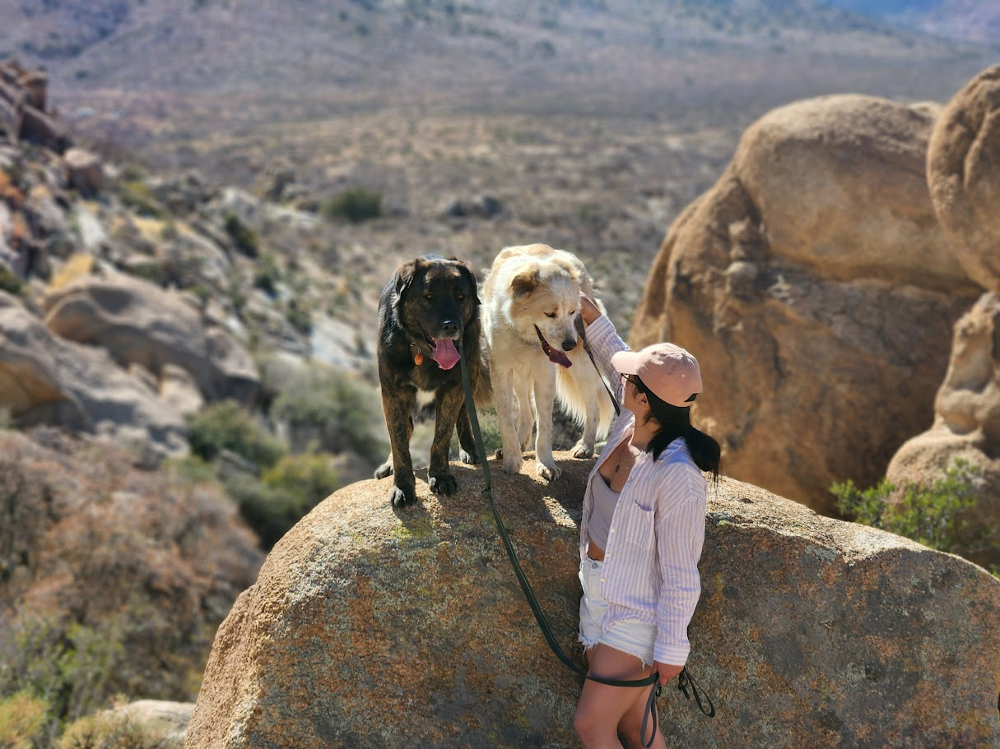
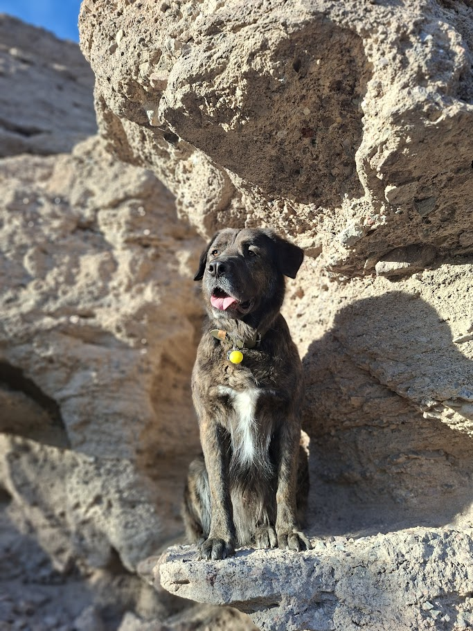
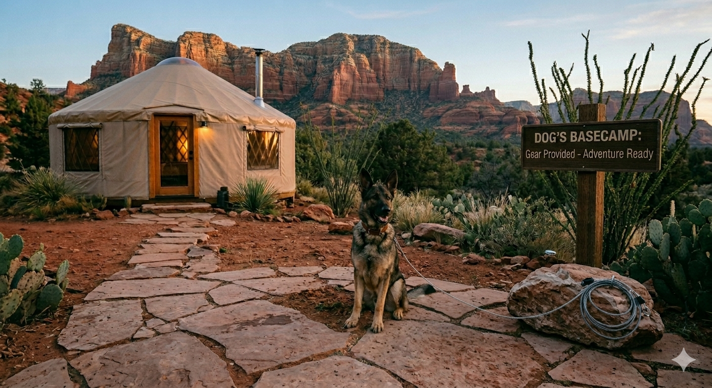
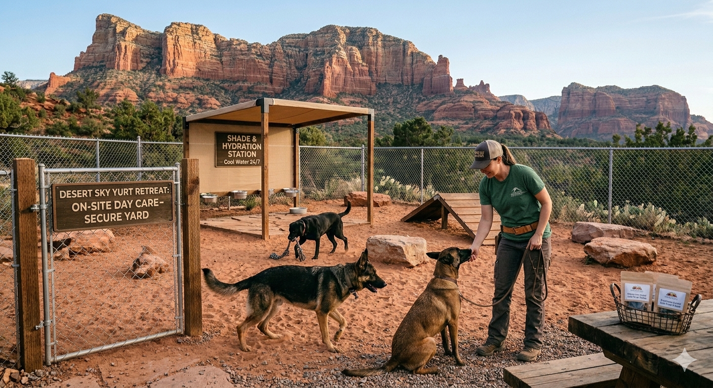

Built for Canine Athletes and Trail Partners
Premium On-Site Care and Rugged Desert Security for Your Best Friend
The Reality of Sedona Trails
We know that a true adventure is better when your four-legged partner comes along, but the reality of the Sedona landscape is brutal. Many of the most iconic climbs, narrow ledges, and wilderness areas feature extreme midday heat, sharp desert cacti, and steep rock scrambles that are highly restricted or outright dangerous for pets. You should never have to compromise your hiking goals or worry about your dog's safety left alone in a vehicle or a cramped city kennel.


Our Dedicated On-Site Day Care
We provide structured, dedicated on-site care and day-boarding right here at the retreat, specifically tailored for large, active, and working breeds. While you are out logging miles and conquering the summits, your dog stays in a high-security environment built for peace of mind.
- Heavy-Duty Security: A sturdy, five-foot perimeter fence completely surrounds the secure yard. This keeps local wildlife out and gives large dogs or high-energy breeds total freedom to safely roam, play, and explore the desert sand without risk of escape.
- Shade and Hydration Stations: The yard features multiple covered, sun-protected rest zones. We keep them stocked with heavy, tip-proof, double-walled stainless steel water bowls that keep water cool even in the desert heat.
- Active Supervision: Experienced handling and routine check-ins throughout the day ensure your dog is safe, comfortable, and monitored while you are away on non-dog-friendly excursions.
- Trail Fuel: We provide complimentary premium, locally crafted dog treats made from clean ingredients to keep your companion's energy up and reward them after a day of guarding the camp.

Pack Less, Adventure More
We set up this space so you have less gear to haul across the country. From heavy-duty tie-outs to stainless steel food bowls and an outdoor washing station to clean off the red desert dust after a shared hike, your dog's basecamp is completely covered. Whether you are running the trails together or leaving them in our capable hands for a grueling summit climb, your dog gets a true desert vacation designed just for them.
